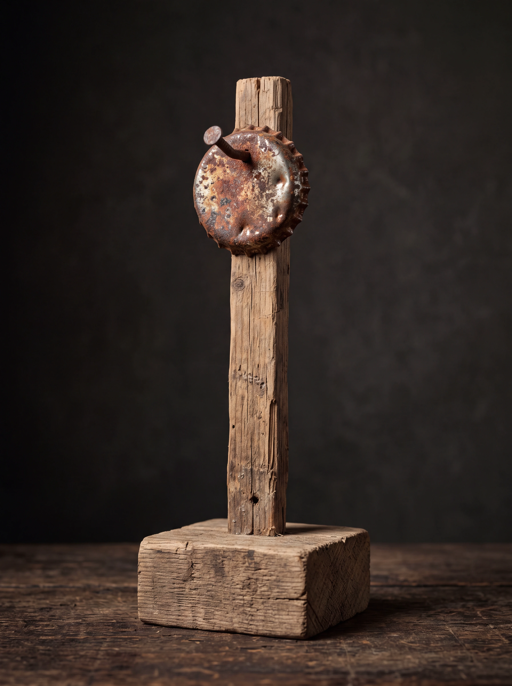

RandaleFUNK-Musikpreis
Der Rostige Kronkorken 2026
Keine Jury. Keine Industrie. Nur eure Stimmen für Album/EP und Song des Monats.
Wähle einen Monat und stimme in beiden Kategorien ab.

Irgendwas mit Punk seit 2022
RandaleFUNK-Musikpreis
Keine Jury. Keine Industrie. Nur eure Stimmen für Album/EP und Song des Monats.
Wähle einen Monat und stimme in beiden Kategorien ab.

Juli 2026
Nach deiner Stimme kannst du auch in den anderen offenen Monaten abstimmen.
Jahresfinale 2026